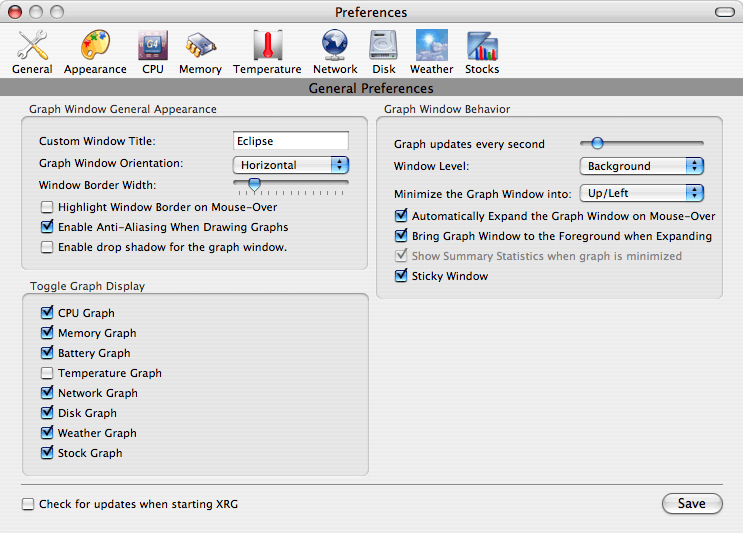
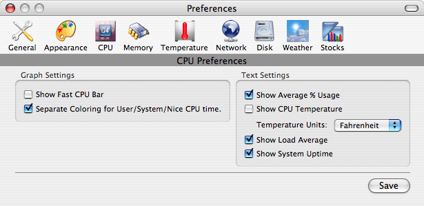
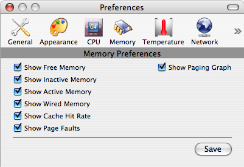
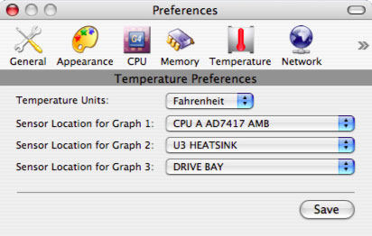
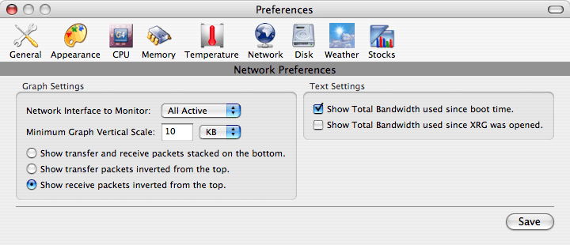
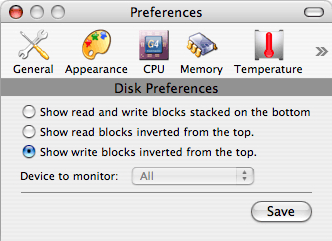
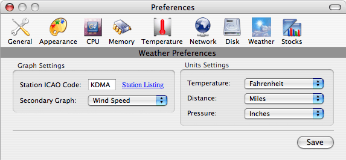
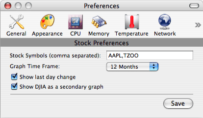

|
|
XRG Preferences Help |
General Preferences |
|
Custom Window Title: Change the title of the XRG window (by default, it is the computer's hostname). Graph Window Orientation: Change the orientation of the XRG window from the default of vertical to a horizontal layout if that works better for your desktop. Window Border Width: Change the width of the border around the XRG window. A larger border width makes it easier to resize the window. Each tick mark is 1 pixel of border width. Highlight Window Border on Mouse-Over: Highlight the window border when the mouse is over it. This makes it easier to resize the window; however, there is a performance penalty for redrawing the border. Enable Anti-Aliasing When Drawing Graphs: Enable anti-aliasing when drawing the graphs. Most of the graphs look nicer with anti-aliasing turned on. Enable drop shadow for the graph window: Turn on the standard Cocoa drop shadow of the XRG graph window. Since the window is usually somewhat transparent, this could cause unwanted effects like the shadowing of the graph text. Also, some versions of MacOS X do not update the drop shadow correctly. Graph Updates: You can change the frequency of graph updates by using the slider. By default, the graph updates every second, but if you want XRG to use less CPU resources, lengthen the time between updates. Window Level: Here you can select whether you want the XRG window to display below all other windows, to act like a standard window, or if XRG should float above all other normal windows. Minimize the Graph Window into: The XRG window can be minimized by double-clicking on the title bar. If Up/Left is selected, the graph window will minimize up into the title bar when the window is oriented vertically, and left when the window oriented horizontally. Conversely, if Down/Right is selected, the window will minimize down or right depending on whether the graph is oriented vertically or horizontally. This option is included so users can select an appropriate behavior for the window if placed along an edge of their display. Automatically Expand the Graph Window on Mouse-Over: If selected, then the graph will automatically expand when the mouse is moved over a minimized window's title bar. After the mouse leaves the window again, the window will automatically minimize itself again. Bring Graph Window to the Foreground when Expanding: This is helpful when the graph level is set to display below other windows. When auto-expanding a window, bring it to the front so the entire window is visible. When re-minimizing, it will go back to it's original position. Sticky Window: If this option is selected, whenever the XRG window gets within about 5 pixels of the edge of a monitor, it will automatically snap to that edge. This makes aligning windows to the edge of the display slightly easier. Check for updates when starting XRG: If selected, then every time XRG is launched, it will connect to a web server to check if a new version has been released. If there is a new version, then a dialog box will be shown. Enable CPU/Memory/Battery/Temperature/Network/Disk/Weather/Stock Graph: Un-checking any of these boxes will hide the corresponding graph from the XRG window. Showing fewer graphs will allow you to make the XRG window much smaller and allow XRG to use fewer CPU resources to update the display. |
Appearance Preferences
|
|
Load Theme: Use this button to select an XRG Theme File (XTF) to load. You can find themes for XRG at http://www.starcoder.com/xrg/themes.shtml. Also, you can drag a theme file to the graph window to set that as your color theme. Save Theme: If you would like to save your color preferences and create a theme of your own, click this button and choose a filename to save it as. Colors: Use any of the color wells to change the corresponding color. When you click on a well, a color palette window will appear. Select a new color and close the color palette window when you are done. Opacities: Use the sliders to configure how transparent or opaque each color will appear. Background: The background color is drawn in the "title" part of the window along with any text areas displayed in the other modules. Text areas in the other modules do not have any graph under the text. Graph Background: The graph background color is shown as a base color for any area that has a graph drawn on it. It is also used as the color to designate Free Memory in the Memory module. Graph Foreground 1: The graph foreground 1 color is the primary color that is used in any graph. Graph Foreground 2: The graph foreground 2 color is the color used for any secondary graphs. Graph Foreground 3: The graph foreground 3 color is the third color used if modules require it. Border: The border color is used for the border surrounding XRG and also the color of the spacing between each graph. Select Font...: Select a font to use for all of the graph text. Font Color Well: Click the color well in the Graph Text box to change the color of the text. Font Opacity: Use the slider in the Graph Text box to change the opacity of the graph text. Anti-alias: Choose whether or not to anti-alias the graph text. Disabling this will allow you to use a smaller display font and will speed things up a bit, at the cost of not looking as nice as full anti-aliased text. |
CPU Preferences |
|
Show Fast CPU Bar: Show a more immediate view of the CPU usage. This bar updates 5 times a second, so it can be distracting for some people, but it will give you a more accurate measurement of how much CPU your computer is using at a particular moment. Separate Coloring for User/System/Nice CPU time: Turn this option on to split the CPU graph into three colors showing the User, System, and Nice CPU usage. Otherwise, the CPU graph is just a single color representing the sum of all CPU usage. Show Average % Usage: Display the average CPU usage for the time frame shown on the graph. Show CPU Temperature: If your machine supports this, it will display the temperature of your CPU (or ambient CPU temperature for a G5). Otherwise it will display n/a. Show Load Average: If enabled, XRG will display the current load average. See the module help page to learn more about load averages. Show System Uptime: Display how long it has been since the computer last booted up. With UNIX operating systems such as MacOS X, system uptimes of days, weeks, or even years are typical. |
Memory Preferences |
|
Show Free Memory: If enabled, XRG will display text indicating the amount of free memory. Show Inactive Memory: If enabled, XRG will display text indicating the amount of inactive memory. Show Active Memory: If enabled, XRG will display text indicating the amount of active memory. Show Wired Memory: If enabled, XRG will display text indicating the amount of wired memory. Show Cache Hit Rate: If enabled, XRG will display text indicating the cache it rate. Show Page Faults: If enabled, XRG will display text indicating the amount of data that page faults. Show Paging Graph: If checked, then XRG will show a graph of the paging activity under the module text. For further explanation of the memory types, paging and cache hit rate, see the module help page. |
Temperature Preferences |
|
Temperature Units: Select whether XRG should show temperature units in Fahrenheit or Celsius. Sensor Location for Graph 1: Select which sensor should be graphed as Graph FG Color 1. Sensor Location for Graph 2: Select which sensor should be graphed as Graph FG Color 2. Sensor Location for Graph 3: Select which sensor should be graphed as Graph FG Color 3. |
Network Preferences |
|
Network Interface to Monitor: Select which network interface XRG should monitor for the graph. This is set to All Active interfaces by default, but in some cases a user might want to display only Ethernet traffic (en0) or only Airport traffic (en1). Minimum Graph Vertical Scale: This configures the minimum vertical scale on the network graph. Normally, XRG will get the graph scale from taking the maximum rate of traffic on the network in the time frame of the graph. If this value is less than minimum graph scale, then the value entered in this preference will be used instead. This is helpful if you have a small amount of traffic on the network all the time (say 300 bytes/sec), but don't want the traffic to fill the graph. Show transfer and receive packets stacked on the bottom: This is the default setting. The graph is displayed with the received traffic bandwidth stacked on top of the sent traffic bandwidth. Show transfer packets inverted from the top: This will keep the received bandwidth on the bottom, but the transferred bandwidth will be displayed from the top of the graph going downward. Show receive packets inverted from the top: This will keep the transferred bandwidth on the bottom, but the received bandwidth will be displayed from the top of the graph going downward. Show Total Bandwidth used since boot time: This displays a total amount of data that has been transferred over the network since the machine was last booted. In some cases this can be inaccurate because the system counter that XRG looks to find the amount of data transferred will roll-over after it hits 4Gb of data transferred in a single direction on a single interface. For example, if you have sent 5Gb of data since your system booted, XRG will get a value of only 1Gb because the value wrapped after 4Gb. Show Total Bandwidth used since XRG was opened: This option was added because of the limitation of the "Show Total Bandwidth used since boot time" option. Once XRG starts keeping track of how much data has been sent or received on the network, it will only wrap at a very very high limit (18,446,744,073 terabytes). For the time being, this limit is pretty much unreachable, so this option should always show an accurate value. |
Disk Preferences |
|
Show read and write blocks stacked on the bottom: This is the default setting. The graph is displayed with the read block bandwidth stacked on top of the write block bandwidth. Show read blocks inverted from the top: This will keep the write blocks on the bottom, but the read blocks will be displayed from the top of the graph going downward. Show write blocks inverted from the top: This will keep the read blocks on the bottom, but the write blocks will be displayed from the top of the graph going downward. |
Weather Preferences |
|
|
Station ICAO Code: A four letter code of the weather station that you would like XRG to graph. You can find a complete list of ICAO codes at http://www.aviationweather.gov/static/adds/metars/stations.txt. Secondary Graph: If you select a value other than "None" from this drop down, XRG will display a secondary graph showing the last 24 hours of the value selected. The secondary graph shows up as a line instead of a filled graph so it won't prevent the user from viewing the primary graph. Temperature Units: Select whether XRG should show temperature units in Fahrenheit or Celsius. Distance Units: Select whether XRG should show distance units in miles or kilometers. Pressure Units: Select whether XRG should show pressure units in inches or hectopascals. |
Stock Preferences |
|
Stock Symbols: Enter a comma separated list of stock symbols that you would like to have XRG graph. The default value here is to just graph AAPL (Apple). Graph Time Frame: This changes the horizontal scale of the graph. Determines whether the graph should show the last 1 month, 3 months, 6 months, or 1 year of stock price data. Show last day change: If enabled, XRG will display a second line of text for each stock showing the change in closing price for the previous day. Show DJIA as a secondary graph: If enabled, the Dow Jones Industrial Average will be shown as a secondary graph and the last closing price in the lower left corner of the graph. The secondary graph shows up as a line instead of a filled graph so it won't prevent the user from viewing the primary graph. |